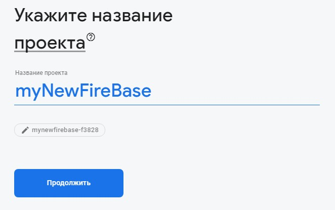
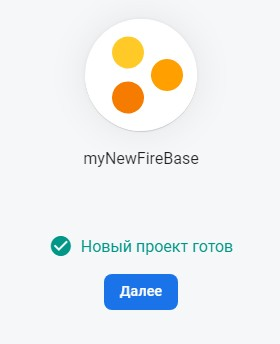

Для создания проекта необходимо авторизоваться на портале FireBase и нажать кнопку - НАЧАТЬ. Откроется панель на которой жмем ДОБАВИТЬ ПРОЕКТ
На следующем этапе нам потребуется указать название проекта, после чего жмем кнопку ПРОДОЛЖИТЬ
Далее система попросить нас определиться, нужна ли нашему приложению GOOGLE Аналитика. Отключаем и жмем ПРОДОЛЖИТЬ
Начнется процесс создания проекта
После завершения создания жмем Далее
Откроется консоль нашего проекта. Следующее что нам необходимо сделать - это создать наше приложение. Для этого жмем на значек приложения
Откроется мастер создания приложения, который состоит из нескольких шагов:
Сначала указываем имя приложения (можно указать то же имя что и у проекта). Здесь же ставим галочку что нам потребуется Firebase Hosting. Жмем зарегистрировать приложение. после жмем далее.
Следующим этапом нам необходимо будет установить интерфейс глобальной строки FireBase, для этого вводим команду в терминале
npm install -g firebase-toolsСначала авторизовываемся введя команду в терминале:
firebase loginДалее инициализируем наш проект введя команду в терминале:
firebase initПосле ввода этой команды начнется процесс инициализации, который состоит из нескольких шагов:
На следующем этапе мастер инициализации попросит указать какие возможности FireBase мы хотим использовать в нашем приложении. Выбираем с помощью нажатия пробела. Указываем Database и Hosting. После того как все необходимое выбрали жмем ENTER
Далее он спросит какой прект мы хотим использовать? новый или уже созданный. Так как мы уже создали проект в консоле FireBase то выбираем пункт Use an existing project
Выбираем проект из имеющихся у нас в FireBase
Теперь все что нам осталось это собрать React приложение
npm run buildИ запушить его в FireBase
firebase deploy